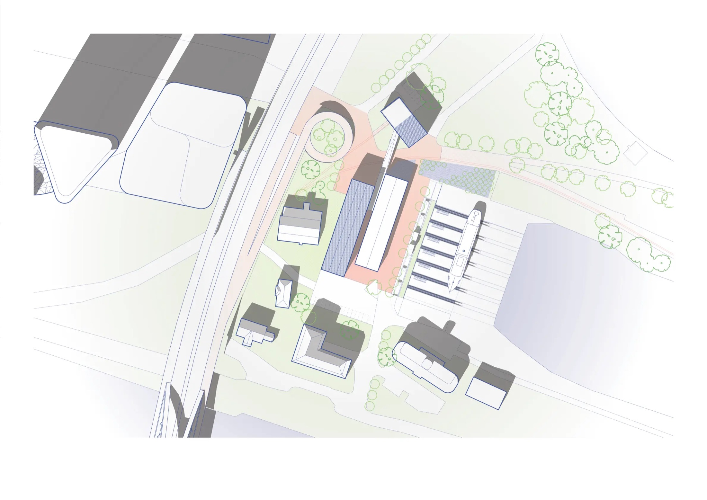
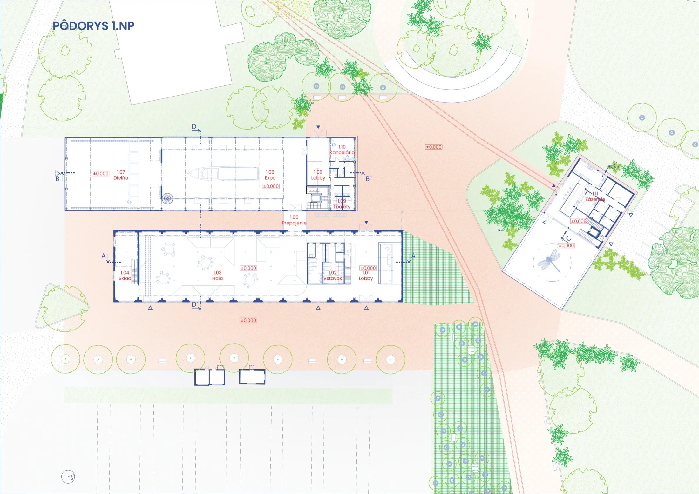
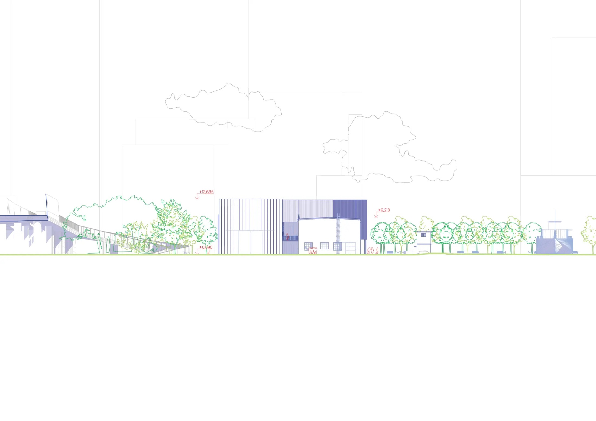
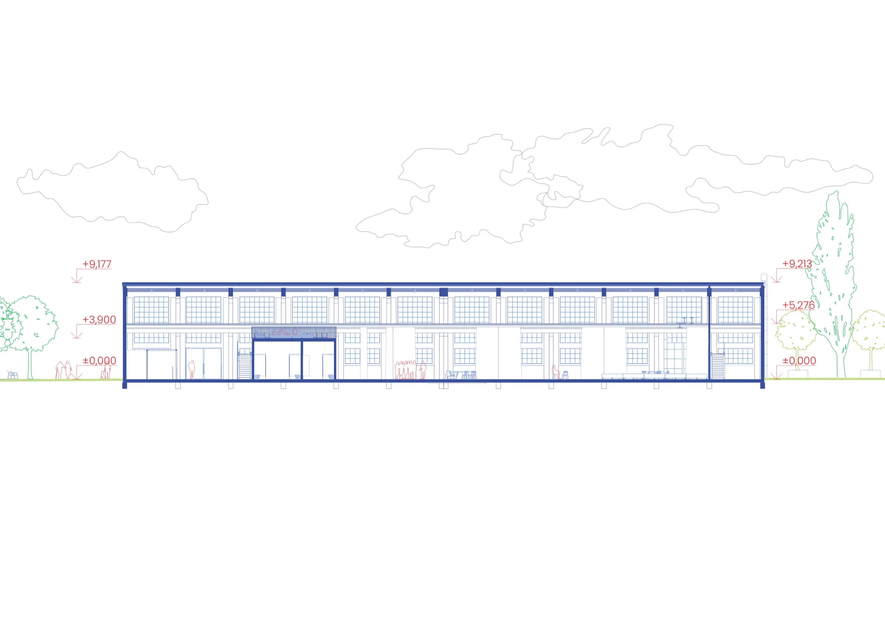

Lodná hala, Zimný prístav
Areál Zimného prístavu v Bratislave, konkrétne konverzia Lodnej haly situovanej v tesnej blízkosti Mosta Apollo. Napriek tomu, že ide o národnú kultúrnu pamiatku na významnej kompozičnej osi Pribinovej ulice, je objekt pre okoloidúcich takmer neviditeľný. Návrh preto v prvom rade zvýrazňuje jeho polohu a pracuje s dominantnými kompozičnými osami mesta v prospech celého areálu.
Konštrukčné a pamiatkové hodnoty — železobetónové rámy, čiastočne rozpadnutý drevený strop — návrh zachováva a obnovuje. Halový charakter interiéru zostáva nezahltený: dopĺňajú ho len hygienické zázemie, sklady a variabilný priestor šatní, fungujúci pri bežnej prevádzke ako uzamykateľné skrinky a počas podujatí ako klasická šatňa s obsluhou. Rozkladateľné pódiá slúžia striedavo ako pobytové plochy aj pódium pre účinkujúcich.
Funkciu kultúrneho a komunitného centra dopĺňajú dva nové objekty v bezprostrednej blízkosti haly — administratíva s reštauráciou a barom pri vstupe do areálu, a expozičný priestor s dielňou na opravu menších plavidiel. Oba objekty zámerne prevyšujú lodnú halu, čím vytvárajú plynulý prechod z mierky Mosta Apollo a okolitých výškových budov do mierky historického územia Zimného prístavu.




